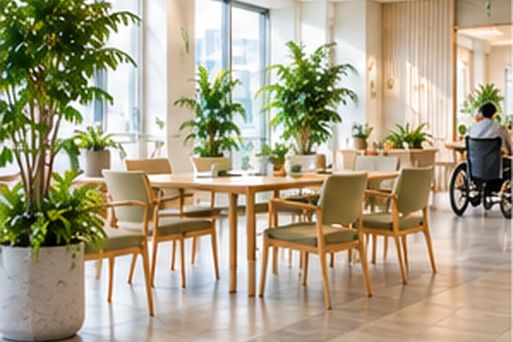

01
受付・共用部
見通しを確保しながら、やわらかな印象を。
WELFARE GREEN
福岡の介護・福祉施設向け観葉植物レンタル。共用部・ラウンジ・受付などで、車いすや歩行補助具の動線、安全性、管理負担に配慮します。
SPACE IDEAS
設置を検討するときに確認したいポイントを、用途ごとに具体的に整理しています。

見通しを確保しながら、やわらかな印象を。

家具配置と人の移動を見て、無理のない位置に。
幅を狭めないことを最優先に。
日常業務や清掃の邪魔にならない配置。
CHECK BEFORE PROPOSAL
設置前に現地条件や写真を確認し、無理のない配置を考えます。
設置前に現地条件や写真を確認し、無理のない配置を考えます。
設置前に現地条件や写真を確認し、無理のない配置を考えます。
設置前に現地条件や写真を確認し、無理のない配置を考えます。
FAQ FOR THIS SPACE
はい。通路幅・転回スペース・家具配置を確認し、移動の妨げになりにくい位置を優先して考えます。
設置場所と利用状況を見ながら、鉢の形状・サイズ・配置について安全面を確認します。
はい。利用者が過ごす場所と業務スペースを分けて確認し、それぞれの管理負担や動線に合う考え方を整理します。
ISSUE → PROPOSAL → INSTALL → CARE
設置事例は「課題 → 提案 → 設置 → 継続管理」の順で確認できる構成です。写真だけでなく、植物・鉢・配置をどう考えたかまで分かりやすく整理します。
ほかの用途を見る →